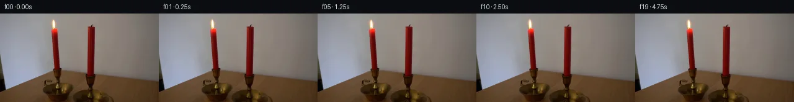

![首帧]()

Round 00
2026-11-05T07:56:03.192410+00:00像素候选变化代码 +236/−0inspection 更新
pixels 40a5081d3ae3ed4e · code 022afd2a21c7ddfd
查看本轮 generate.py 真实 diff
--- previous/generate.py
+++ current/generate.py
@@ -0,0 +1,236 @@
+"""Deterministic local pixel continuation of the supplied candle photograph.
+
+No learned models, renderer, external scene data, or generated-image viewing is
+used. The original flame radiance is extracted and warped about its fixed root.
+"""
+from pathlib import Path
+import json
+import hashlib
+import numpy as np
+from PIL import Image, ImageDraw
+from scipy.ndimage import map_coordinates
+import artifact_io
+
+ROOT = Path(__file__).resolve().parent
+PLAN = np.array([
+ [1.00,1.00, 0.00,1.00],
+ [1.02,0.99,-0.10,1.01],
+ [1.05,0.96,-0.25,1.02],
+ [1.07,0.95,-0.40,1.02],
+ [1.04,0.98,-0.25,1.00],
+ [0.99,1.03, 0.00,0.98],
+ [0.96,1.05, 0.25,0.97],
+ [0.98,1.02, 0.40,0.99],
+ [1.03,0.97, 0.30,1.01],
+ [1.06,0.95, 0.10,1.02],
+ [1.03,0.98,-0.20,1.01],
+ [0.98,1.02,-0.40,0.99],
+ [0.95,1.05,-0.30,0.97],
+ [0.97,1.03,-0.10,0.98],
+ [1.02,0.99, 0.20,1.00],
+ [1.06,0.96, 0.40,1.02],
+ [1.08,0.94, 0.30,1.03],
+ [1.04,0.98, 0.10,1.01],
+ [1.00,1.01,-0.15,0.99],
+ [1.01,1.00,-0.20,1.00],
+], dtype=np.float64)
+
+
+def smoothstep(a, b, v):
+ q = np.clip((v-a)/(b-a), 0., 1.)
+ return q*q*(3.-2.*q)
+
+
+def linearize(rgb):
+ a = rgb / 255.
+ return np.where(a <= 0.04045, a/12.92, ((a+0.055)/1.055)**2.4)
+
+
+def encode(lin):
+ a = np.clip(lin, 0., 1.)
+ a = np.where(a <= 0.0031308, a*12.92,
+ 1.055*np.power(a, 1./2.4)-0.055)
+ return np.clip(np.rint(a*255), 0, 255).astype(np.uint8)
+
+
+def generate():
+ original = np.asarray(Image.open(ROOT/'first_frame.png').convert('RGB'))
+ assert original.shape == (144,256,3)
+ original_float = original.astype(np.float64)
+ Y, X = np.mgrid[:144,:256].astype(np.float64)
+
+ # A gently curved wall color model from nearby unoccluded wall samples.
+ # Neither candle nor source flame participates in the fit.
+ dx, dy = (X-87.)/20., (Y-16.)/20.
+ basis = np.stack([np.ones_like(X), dx, dy, dx*dx, dx*dy, dy*dy], -1)
+ samples = (Y>=3)&(Y<=23)&(X>=68)&(X<=109)&((X<=76)|(X>=98))
+ coeff = np.linalg.lstsq(basis[samples], original_float[samples], rcond=None)[0]
+ wall_rgb = np.clip(basis @ coeff, 0., 255.)
+ wall = linearize(wall_rgb)
+ linear_original = linearize(original_float)
+
+ # Preserve all source photographic detail except the positive luminous
+ # contribution around the flame. Base fade protects rim and dark wick.
+ window = (smoothstep(77.,81.,X)*(1.-smoothstep(93.,98.,X))
+ *smoothstep(4.,8.,Y)*(1.-smoothstep(22.,24.,Y)))
+ excess = np.maximum(linear_original-wall, 0.)
+ # A soft intensity gate leaves ordinary background grain stationary.
+ gate = smoothstep(0.004, 0.017, excess[:,:,0])
+ radiance = excess * (window*gate)[:,:,None]
+ plate = linear_original-radiance
+
+ # Additional illumination is much weaker than the visible flame itself.
+ # It is limited to the nearby wall/candle top, with feathered boundaries.
+ light_window = (smoothstep(63.,68.,X)*(1.-smoothstep(107.,112.,X))
+ *smoothstep(0.,4.,Y)*(1.-smoothstep(48.,57.,Y)))
+ light_field = (np.exp(-0.5*((X-87.)/10.)**2
+ -0.5*((Y-24.)/14.)**2)*light_window)
… diff truncated; 149 more lines …